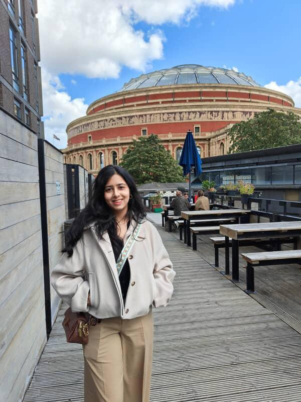
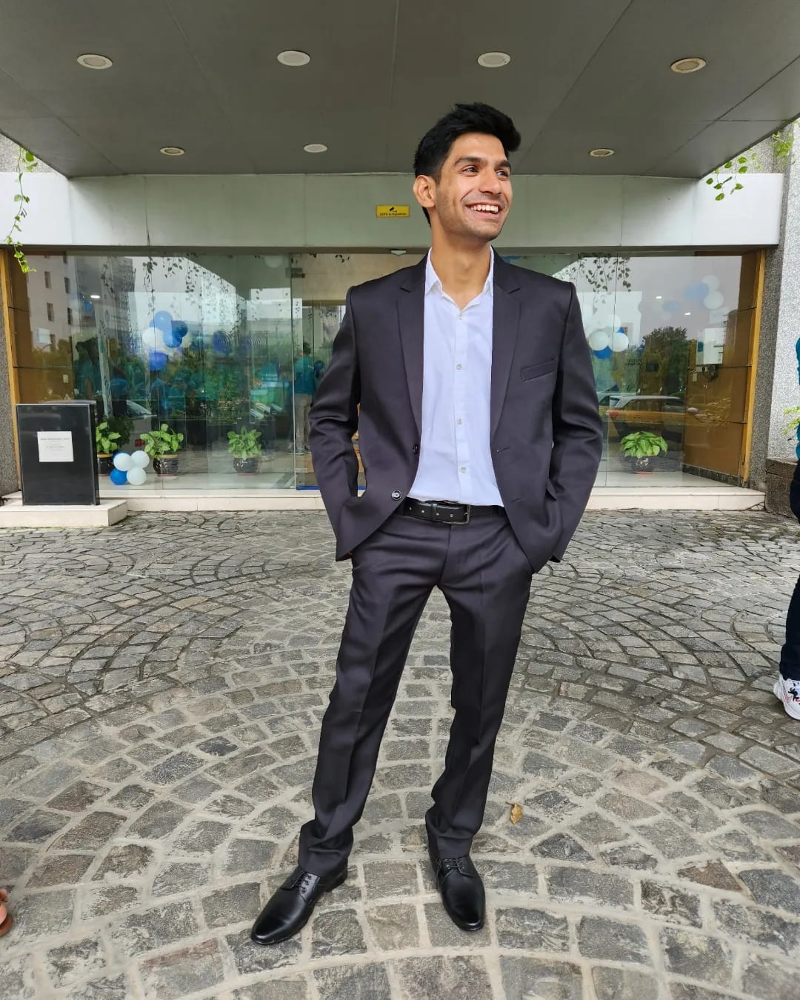
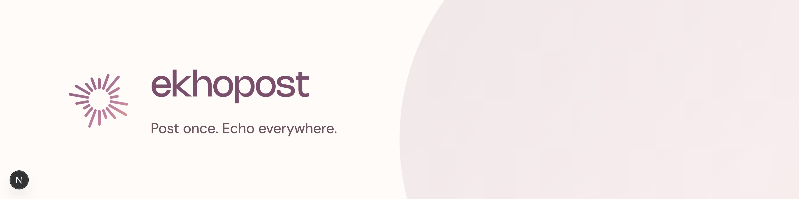
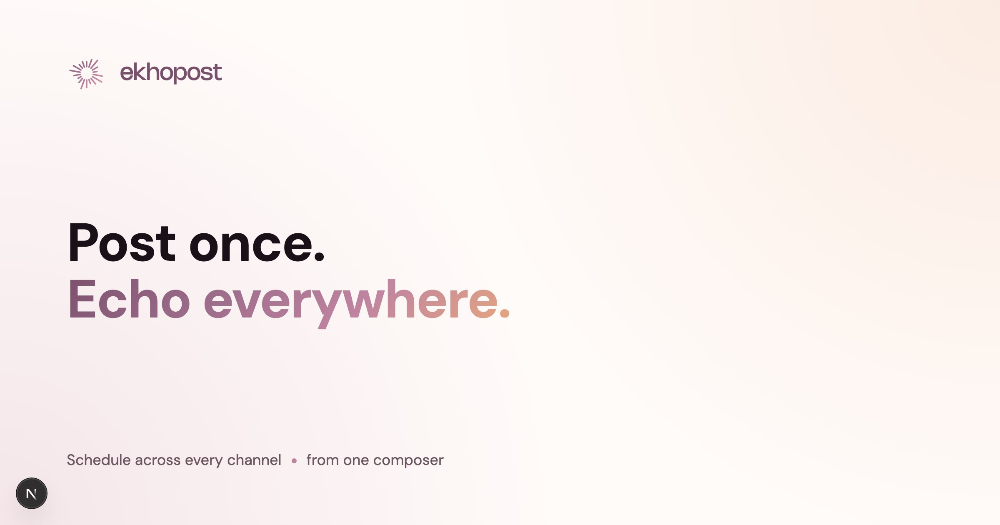
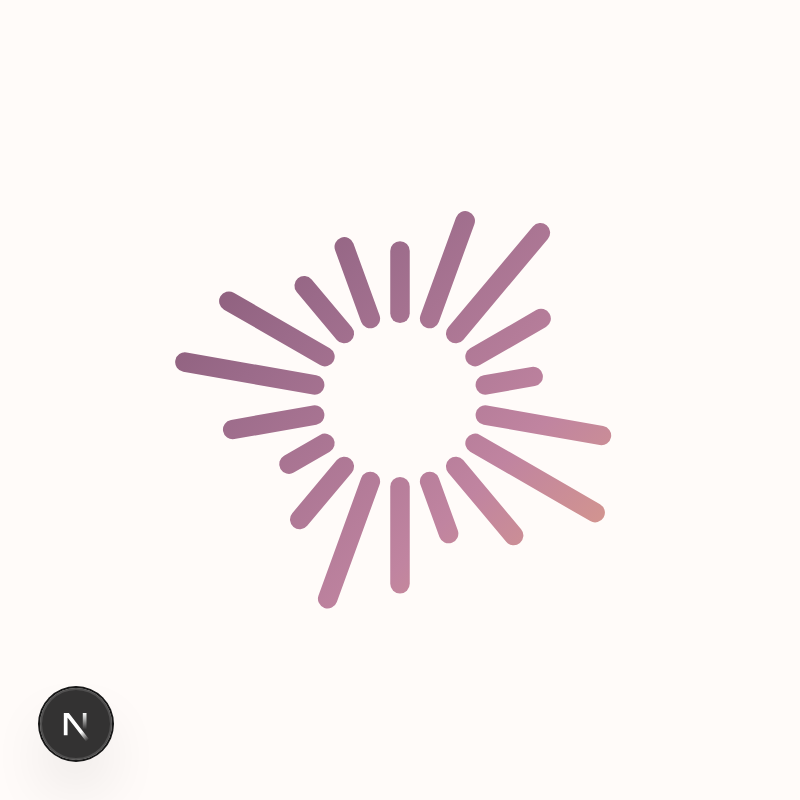
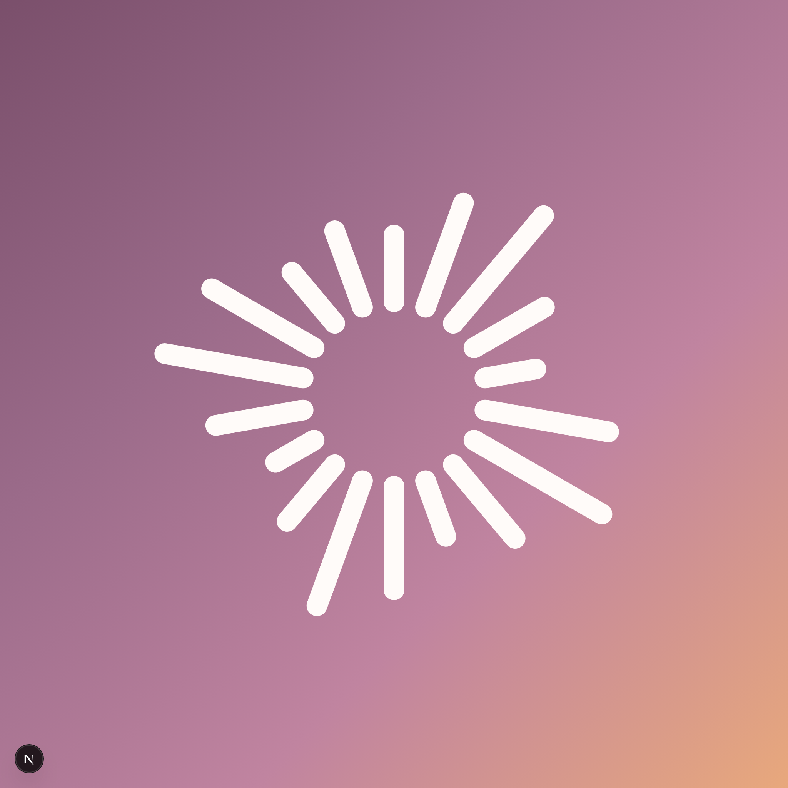
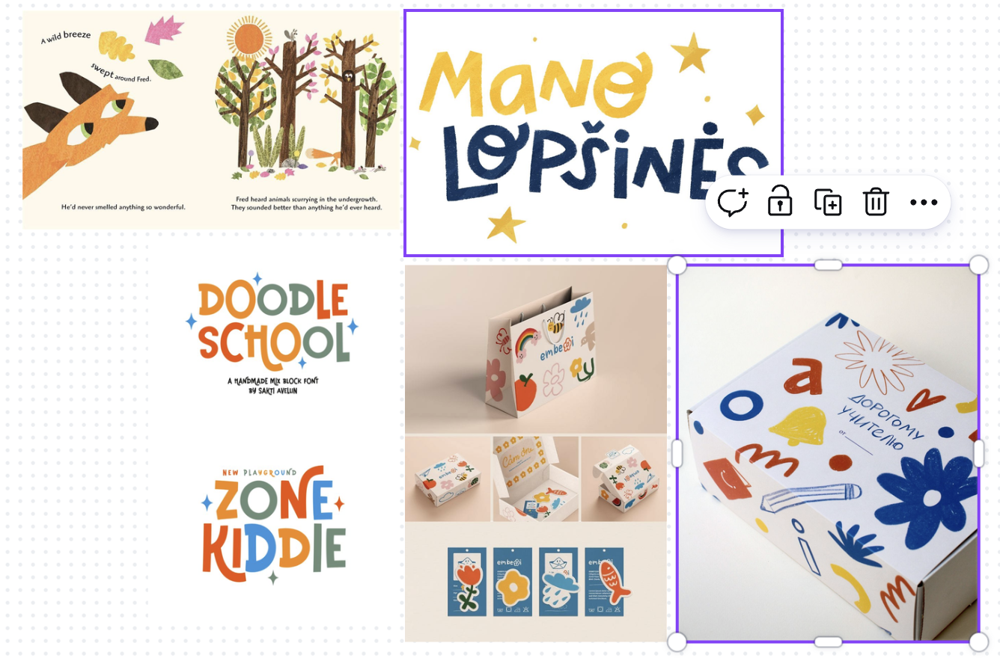
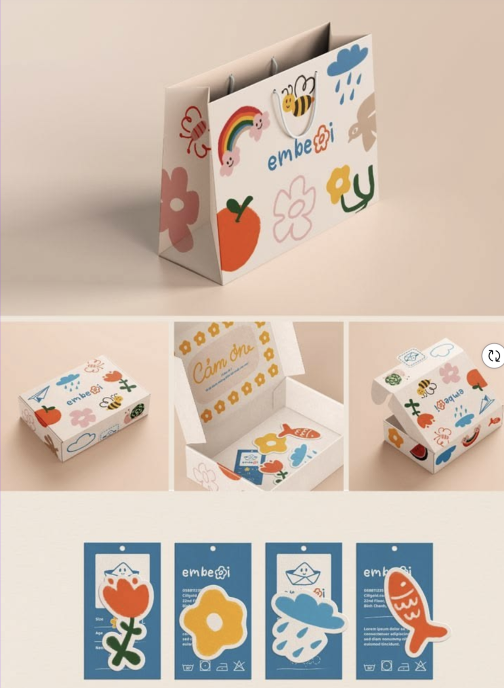
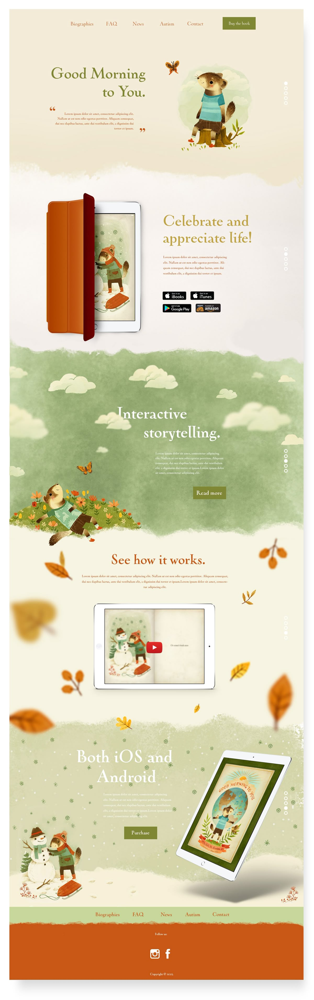

click anywhere or press Esc to close


It was made by someone who knew how to ask. By noon, that someone is you.
How AI actually thinks — just enough to direct it like a designer.
Guesses the most likely next bit — one fragment at a time. Fluent, fast, sometimes confidently wrong.
We're hereGets foggier the longer you talk to it. A longer chat is not a smarter chat.
Next partNever hands you the same thing twice. That's not a bug — it's how you get options to pick from.
The buildLike searching a database and fetching a stored fact. It does not work this way.
Having read a vast slice of the internet, it continues your sentence with the most likely next fragment — one at a time. Fluent, fast, occasionally confidently wrong.
Mechanism: large language models generate by next-token prediction — not retrieval.
Every job starts with your brief. A vague brief gets vague work; a specific one gets great work. Writing better briefs is the whole of the next part — for now, just know: the brief decides the output.
The intern reads and writes in puzzle-pieces — roughly 3–4 characters each. “Designing” might be design + ing. Everything it remembers and everything it costs is counted in tokens.
Only so much fits on the desk at once — and it's measured in tokens (those fragments from a moment ago). A longer chat isn't a smarter chat: pile on too much and the earliest things slide off the edge. That's why it forgets how the conversation began — much more on that next part.
GPT, Claude, Gemini aren't “AI” in general — each is one specific intern. Each did all its reading once, beforehand (that's “training”), then its brain was frozen. So it doesn't learn from your chat, and it only knows up to a cut-off date. Picking a model just means choosing which intern to put on the job — each has its own strengths, quirks and price.
Modern models can read your text, see an image you paste, and sometimes hear audio. So you can show the intern a reference — not only describe it.
Match the model to the medium. Leaders change every few months — pick one or two and go deep.
Because it's predicting what sounds right, not checking what is right, it can be flat wrong in the very same polished voice it uses when it's correct. The danger isn't that it's wrong — it's that it's wrong confidently.
Image AI (a “diffusion” model) starts with pure static and removes the noise step by step until your picture emerges — like chipping a figure out of stone.
Diffusion models denoise from random noise toward the prompt.
You don't walk into the kitchen and cook — you give your order to the waiter, the kitchen makes it, the waiter brings it back. An API is that waiter for software: an app hands over a request, the model does the work, the answer comes back — automatically, no chat box. Every “AI-powered” app you've used is just doing this behind the scenes. Not magic — plumbing.
A normal prompt is one instruction in the chat. A system prompt sits above the whole conversation — rules the intern reads before anything you type, every single time. It's how apps keep an AI on-script. Park this one: your brand, written down, becomes your system prompt — and that's the secret to the whole build in Part 4.
Why your intern drifts mid-project — and the moves that fix it.
The “context window” is how much the intern can hold on its desk at once. Pile on a long, messy chat and papers slide off the edge. A longer chat is not a smarter chat.
Give a model a long input and it attends well to the beginning and end — but glazes over the middle. Accuracy can fall 30%+ when the key fact sits in the centre.
Liu et al., “Lost in the Middle,” TACL 2024.
A 2025 study tested 18 leading models. Every single one got less reliable as the input grew longer — even those advertising giant context windows. A bigger desk doesn't make a tired intern sharper.
Chroma Research, “Context Rot,” 2025.
Never penalised for a wrong guess, so it always fills something in — dressed in fluent prose. Verify every fact, stat, dose, citation.
Trained on what people liked, so it tends to agree with you. Don't ask “I'm right, yeah?” — ask neutrally, and tell it to argue the opposite.
Kalai et al. (OpenAI, 2025) on hallucination; Sharma et al. (Anthropic, 2023) on sycophancy.
Every new chat is a blank intern. You paste your brand brief on top — then a long chat shoves it off the desk, and tomorrow you start over. There's a better way: bake the brief in.
The words that turn a generic generator into your designer.
It has absorbed a huge slice of human design and writing, so it can riff in any style in seconds — a tireless, well-read intern.
It reaches for the most likely answer — text by next word, images by denoising. The taste and direction come from you.
Feed it your taste. What “your taste” means depends on what you're making:
The words, a reference, what to do and avoid. The craft of the brief.
Your colours, type, spacing, components + a reference. Used for sites, docs, decks, posts.
Same move as the JSON slide — describe the mark as structured fields, swap the subject, generate variations.
{ "concept": "sound wave → leaf", "style": "flat, geometric", "colour": "#7A4F6B on cream", "negative_space": "generous", "must_work": "16px · 1-colour", "subject": "‹your brand›" }
Inter · Poppins · Montserrat · Roboto · Open Sans · Lato
Fraunces · Playfair · DM Serif · Cormorant
Space Grotesk · Bricolage · Hanken · Sora
A handful of references — brands, posters, sites you love — pinned together to lock a feeling before a single pixel exists.
Your identity written down once — logo, colours, fonts, imagery, voice. Hand it to any cook (or any AI) and the dish comes out the same every time.
Your brand book turned into bricks that snap together: named tokens (colour, type, spacing) + ready components (buttons, cards). It's the extra layer a website or app needs.
Define the book once — it powers every artefact. Only the website needs one extra layer first: your design system.
Vibe-code it from your design system, then “save as PDF”. The print rules live right in the spec.
{ "format": "tri-fold · A4", "bleed": "3mm", "colour_space": "CMYK 300dpi", "palette": ["#7A4F6B","#E8A87C"], "fonts": {"head":"Fraunces","body":"Hanken"}, "export": "save as PDF", "subject": "‹your flyer›" }
“fix the colours”
“make it look better”
“the layout is off”
“header to #7A4F6B”
“double the spacing between cards”
“headline in Nohemi, larger”




Define it once = your brand book. Reuse it two ways — a brand block (text, for words) + a design system (build kit, for visuals). That’s exactly what you build next.
Your brand assets — and a live website vibe-coded from them.
Children's books that help kids empathise with grandparents in dementia care. Same steps you'll do — with the exact prompts that skip the hiccups.
Magical, colourful children's books that help kids understand dementia — replacing fear with empathy and joyful connection.
Magical · Compassionate · Colourful
“Seeing the magic, not the medical.”

I gave: a Canva board of Pinterest refs (“Branding for Children's Books”)Warm · Magical · Empathetic
Use: gentle, playful, real, hopeful · Avoid: clinical, scary, sad
Kid: “Grandpa's memories are like fireflies — sometimes they hide, but they're still there.”

I gave: a packaging reference for the doodle objects
I gave: a layout reference for the vibeSay “render it as HTML” up front — skip the text → “code it” loop.
Name it: grainy oil-pastel, off-white, hand-drawn — so it matches first try.
“Use the exact HEX & fonts already defined; only add, never change.”
“Create the pattern AND apply it across the book/components.”
One line — who you help and the change you make.
3 words
Pick the line that sounds like you.
Don't describe your taste — show it. Gather a board, screenshot it, hand it over.
Search “[your vibe] branding” — pin 5–8 you love.
PinterestDrag them onto a free Canva whiteboard; arrange loosely.
CanvaCapture the whole board as one image.
⌘⇧4 · PrtScPaste it in with the prompt below — “here’s my vibe.”
Gemini / AI StudioA heading + body pairing, free on Google Fonts.
A simple mark that works tiny and in one colour.
Warm · Plain-spoken · Witty
Use: real, care, you, simple · Avoid: synergy, unleash, revolutionary
“Real talk, no jargon — here’s what matters.”
Built from your colours, type, voice and top-5 sections.
Your CTAA short system prompt — paste it on top of any chat and everything comes out on-brand, every time.
Hand back the assets & site to rebuild anything pixel-perfect.
Daily/monthly reset (Gemini, Bolt, Canva) is sustainable. One-time lifetime (Gamma ~400) is really a trial.
Badges, vendor subdomains. ~$15–20/mo removes them and adds brand kits + private generations.
Who are you, and what's the feeling?
What did the intern get wrong that you fixed?
US Copyright Office (2025); SCOTUS cert denied Mar 2026; Disney v. Midjourney (2025); EU AI Act Art. 50 (Aug 2026); FTC.
This presentation was also built with Claude Code (Pro) — every slide, demo and worked example.
It's not about the tools. It's how you direct them.
You found the secret slide. Keep this prompt in your back pocket:
“Before you answer, ask me any questions you need to give me your best possible work. Then wait.”